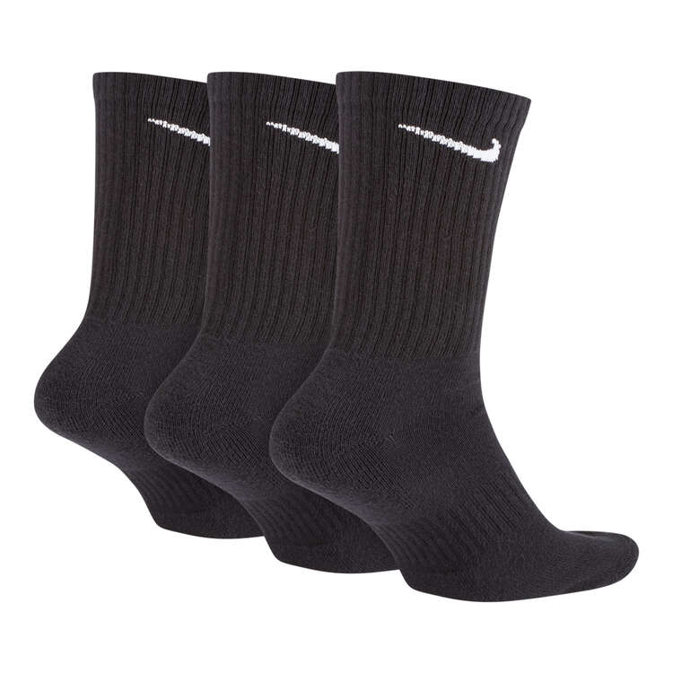

Ponožky
Prvním tipem jsou nepochybně dlouhé, teplejší ponožky. Mám osvědčenou značku NIKE, ale nebráním se experimentům. Na barvě moc nezáleží, avšak alespoň jeden pár černých a jeden pár bílých by byl ideální stav pro sladění s mými vysoce vkusnými hadry.
